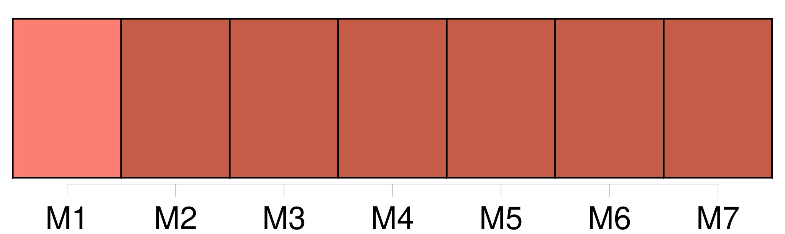
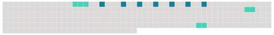

Longueur nb maillons : 10 mentions |
 |
Quand il déboucha dans la grande rue du milieu, il songea à [quelque ville étrange] , avec [ses] quartiers distincts, [ses] faubourgs, [ses] villages, [ses] promenades et [ses] routes, [ses] places et [ses] carrefours, mise tout entière sous un hangar, un jour de pluie, par quelque caprice gigantesque. L'ombre, sommeillant dans les creux des toitures, multipliait la forêt des piliers, élargissait à l'infini les nervures délicates, les galeries découpées, les persiennes transparentes ; et c'était, au-dessus de [la ville] , jusqu'au fond des ténèbres, toute une végétation, toute une floraison, monstrueux épanouissement de métal, dont les tiges qui montaient en fusée, les branches qui se tordaient et se nouaient, couvraient un monde avec les légèretés de feuillage d'une futaie séculaire. [4 phrases]
De proche en proche, le réveil gagnait [la ville] , du quartier populeux où les choux s'entassent dès quatre heures du matin, au quartier paresseux et riche qui n'accroche des poulardes et des faisans à ses maisons que vers les huit heures. |
 |
Il est possible de télécharger la ressource sur la page Ortolang |
Si vous avez des questions ou vous voyez des erreurs, merci d'envoyer un mail à silvia.federzoni89@gmail.com |